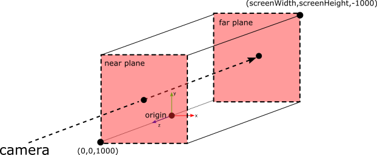
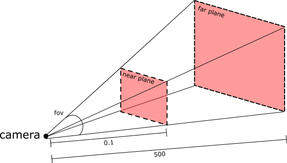

Assignment 0: Hello CS317!
In which, we begin our work with git, cmake, and C++
Due Thursday, Sept 2, before midnight
The goals for this assignment are:
-
Sign-up for github
-
Join slack
-
Look at the website!
-
Setup your animation development environment
-
Implement a simple animation in C++
We will complete this assignment during Lab on Sept 2.
1. Sign-up for github
Please go to github.com and register. We will use github for assignments and projects this semester. Email the instructor (anormoyle at brynmawr.edu) with your github username.
We have made the decision to open-source our assignments and projects for this class. The benefit of this decision is that you will have a portfolio of work that you can share with employers by the end of the semester.
One question people often have about open source is whether it will encourage cheating. At Bryn Mawr and Haverford, we have an honor code and it’s generally not an issue. Honor code aside, remember also that if you do copy other’s work, it will be in plain view for anyone to see!
You will discover that there are many open-source coding resources for animation online. Some of it is boiler plate and intended to be re-used. In general, if you use someone else’s functions, classes, math implementations, or algorithms, you must attribute them!
2. Join slack
I will be inviting you all to join the course slack channel. In the introduction channel, say and introduce yourself:
-
What is your preferred name and pronouns?
-
Tell us your favorite food. :)
3. Read the class web pages
Start by reading through all of the class webpage! Bookmark this page on your browser, or use some other method that helps you keep this information handy. All course materials and announcements will be posted on the course webpage!
Pay special attention to the Schedule.
4. Setup graphics
Fork the repository at getting-started into your own github account. Follow the instructions in the readme to build the demo.
| If you run into any problems setting this up, do not hesitate to ask for help! Ask after class, contact me by email or on Slack. |
You may also want to install Blender, but these are not necessary for class:
-
Blender: A 3D modeling tool with photorealistic rendering features. Blender can be used to view and create 3D models. We will use this in class demos and you may find it useful (and fun) to try it yourself.
5. Make something!
We will use the same C++ code framework throughout this course. For some assignments, you will implement core features in the animation library. For other assignments, you will write applications which use the animation library. The framework also includes a simple graphics library for visualizing and controlling your animations.
Some of you may not feel comfortable programming in C++. This is ok! This course is an opportunity to gain experience and this lab is intended to help you gain your footing. Note that you can always look at the existing code in the framework and then modify it to complete your assignments. You can also post questions in Slack, either publicly or privately via direct message.
5.1. Get the source
On github, fork the respository at animation-toolkit.
Then clone your repository to your machine. Below, we store the repository in a directory called cs317.
> mkdir cs317
> cd cs317
> git clone <url-to-your-forked-repository>Let’s take a look at your repository
We will use the same framework for every assignment. Each week, you will implement additional features inside this framework.
Let’s start by taking a look at the repository. It contains the following directories to start.
-
/libsrc - source files for animation and ui libraries. Most assignments will extend the animation library
-
/assignments - source files for demos and test applications
-
/motions - character and motion models
-
/cmake-modules - helper build files for cmake
-
CMakeLists.txt - top level build file for cmake
5.2. Compile and run
We use cmake because it can support multiple platforms (such as Ubuntu and Windows) with a single build configuration. For example, cmake can generate Makefiles for UNIX and .vcproj files for Windows. Cmake stores its build settings in CMakeLists.txt files in each directory.
Because cmake generates a lot of temporary files, we use an out of source build to keep our repository clean.
In other words, we will create a separate directory named /build to compile and link.
> cd animation-toolkit
> mkdir build
> cd build
> cmake ..
> make
We do not want to check in temporary files to git!!! We can tell git to ignore unwanted files by adding them to .gitignore. I’ve added build to this file, so your temporary files are not checked into git.
|
After this step, you should have executables installed into a new directory called /bin. To test, let’s make sure the default viewers work. These are implemented in assignments/sphere2d and assignments/sphere3d. After building, you can run them from the /build directory. Let’s start with the default 3D scene:
> ../bin/sphere3dYou should see a grid with a grey background.
-
Dragging with the left mouse will rotate (try it!) around the world origin.
-
Middle mouse button will zoom.
-
Right mouse button will pan.
-
Pressing 'Escape' or closing the window will quit the application.
TODO IMAGE
5.3. Draw in 2D
To start, let’s look at the implementation of sphere2d in assignments/a0/sphere2d.cpp.
#include "atkui/framework.h"
using glm::vec3;
using namespace atkui;
class Sphere2D : public Framework {
public:
Sphere2D() : Framework(Orthographic) {
}
virtual void draw() {
// colors are RGB triplets in range [0,1]
setColor(vec3(0,1,0));
// draw a sphere at center of the screen
float radius = 50.0;
drawSphere(vec3(width(), height(), 0), radius);
}
};
int main(int argc, char** argv)
{
Sphere2D viewer;
viewer.run();
return 0;
}This code creates a window capable of receiving user input and drawing graphics. The code for viewer2d is very similar. Each creates an instance of Framework and then calls run(). The run() function does not return until either 'Escape' is pressed or the window is closed. Framework::run() implements our game loop, which will invoke callbacks for user events, update, and draw.
We use a lightweight drawing API, called
AGL to visualize our
animation demos. Framework is derived from agl::Window. See the
agl::Window
documentation and the file libsrc/atkui/framework.h for a full list of the
features implemented by Framework.
|
Framework supports two types of default scenes:
-
orthographic (2D)
-
perspective (3D)
In both, we use the term camera to refer to the location and direction in the world that we can see objects. Moving the camera allows us to see different parts of the world. The parameters of the camera control how much of the world we can see (sometimes called a view volume). Only objects in front of the camera can be seen.
By the default, the 2D scenes in this course do not allow you to move the camera. In other words, only objects that have (X,Y) coordinates between (0,0) and (screen width, screen height) can be seen.
Orthographic

-
Viewable world is a cuboid
-
Defines a cuboid having dimensions screenWidth x screenHeight x 2000 units. The origin of the world is located at the bottom left corner of the window.
-
The view volume extents are X = [0, screenWidth], Y = [0, screenHeight], and Z = [-1000,1000]
-
No perspective depth. In other words, every object looks to be the same distance away from the camera and parallel lines always appear parallel.
5.3.1. TODO: Modify sphere2d
Draw a red sphere behind the green sphere.
TODO: Create an image
If we want to draw shapes in front of our sphere, we increase the Z value; to draw behind the sphere, we decrease the Z value.
| Although our world looks 2D, it is actually 3D. The sphere looks 2D because it is drawn with flat shading. |
5.4. Draw in 3D
Now let’s look at a 3D program. Before, we drew shapes in the center of the screen. Now we will draw them at the center of the 3D world, which is at coordinate (0,0,0).
#include "atkui/framework.h"
using glm::vec3;
using namespace atkui;
class GreenSphere3D : public Framework {
public:
GreenSphere3D() : Framework(Perspective) {
}
virtual void draw() {
// colors are RGB triplets in range [0,1]
setColor(vec3(0,1,0));
// draw a sphere at center of the world
float radius = 50.0;
drawSphere(vec3(0), radius);
// draw a floor with a XZ grid
drawFloor(2000, 200, 50);
}
};
int main(int argc, char** argv)
{
GreenSphere3D viewer;
viewer.run();
return 0;
}The Framework class creates a window capable of receiving user input and drawing graphics.
Controls:
-
Left-drag the mouse to rotate around the scene
-
Middle-drag the mouse to zoom into the scene
-
Right-drag the mouse to pan around the scene
-
Escape button closes the window
In the 3D scene, the extents of the world are different and the camera can be rotated and paned in the scene. Same as before, only objects that are in the camera’s view can be seen. By default, this is objects that are with 500 units in front of the camera.
Perspective

-
Viewable world is a truncated four-sided pyramid
-
Defines the pyramid with near distance = 0.1 and far distance = 500 and field of view = 60 degrees
-
Perspective depth. Objects closer to the viewer are larger than those far away. This is a traditional 3D view.
-
Basic program: viewer3d
5.4.1. TODO: Modify the program
Create 6 additional spheres around the green sphere:
-
above (+Y)
-
below (-Y)
-
left (+X)
-
right (-X)
-
front (+Z)
-
back (-Z)
TODO: Image
Feel free to play with the colors, shapes, and sizes to personalize your demo.
-
Save a screenshot of your spheres
5.4.2. TODO: Animate your shapes
-
Save a gif of your animation
-
Save a movie
5.4.3. TODO: Load a character
(Maybe) todo
6. Hand-in your work
6.1. What to hand-in
-
Your code
-
Images, movies, gifs, as appropriate
-
Your readme
6.2. How to hand-in
Check-in your code, images, and writeup and push the changes to Github. If everything is uploaded correctly, you will see your work on Github.
> cd animation-toolkit
> git add <files>
> git commit -m "helpful message"
> git pushBest practice is to always commit changes as you work, rather than waiting until the end to commit changes. You can always revert to an old version if you need to!
Your code should download and compile without modifications. Test your assignment on a lab machine (Park 230) to ensure that it works.
6.3. Generating images, movies and gifs
Screenshots
On Ubuntu, you can take a screenshot by
-
Prt Scrn to take a screenshot of the desktop.
-
Alt + Prt Scrn to take a screenshot of a window.
Gifs
On Ubuntu, you can use Peek to create gifs.
Movies
On Ubuntu, you can use recordmydesktop to record movies in .ogv format.
By default, the whole desktop is recorded unless you give it a window id.
To get the window id, call xwininfo and click on the window. Then pass the
id to recordmydesktop.
> recordmydesktop --windowid <WindowId> --no-sound --v_quality 30 -o <name>.ogvTo check the video, open it in firefox.
> firefox <name>.ogv| Files larger than 100 MB cannot be checked into git. In general, videos should be less than 5 MB. |
6.4. Update your Readme.md
Update a0/Readme.md to document the features in your assignment. Your readme should contain your images, gifs, and movies.
On github, you can drag and drop movies into your readme files. Images and gifs can also be added that way, or by including text such as the following
This Guide can help you with writing markdown.